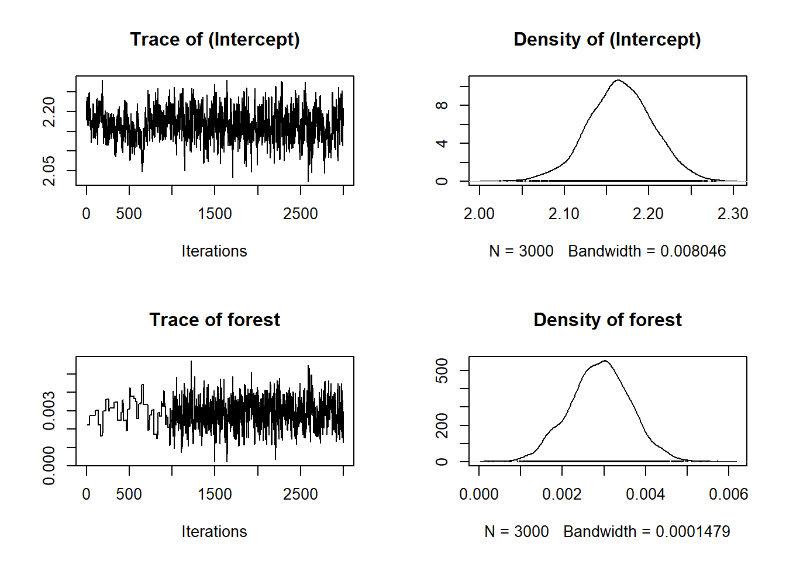
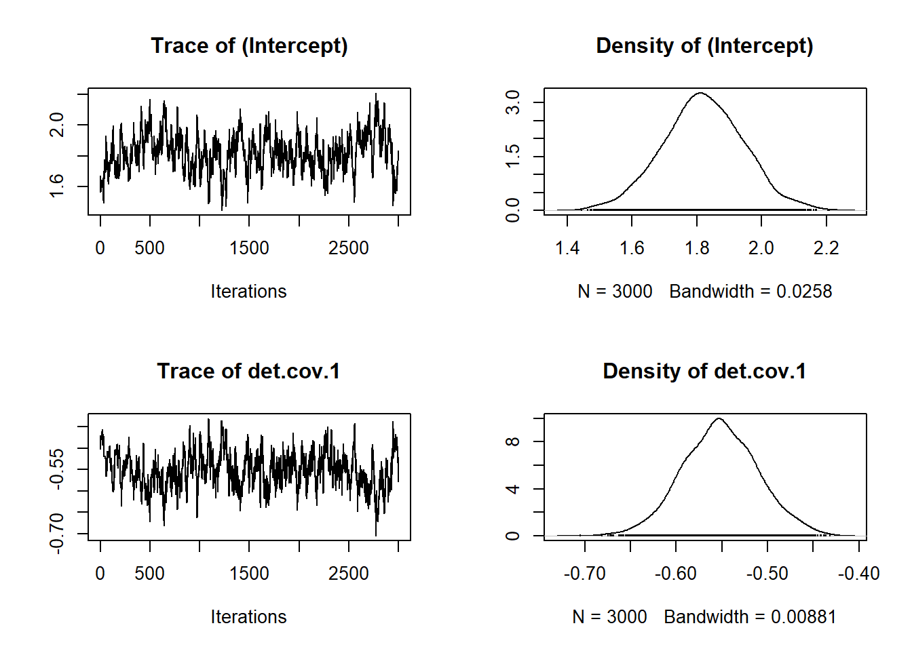

library(tidyverse)
library(spAbundance)Clase 2: Modelos N-Mixture usando spAbundance
Introducción a los modelos de abundancia
EL Paquete de R unmarked
Ejercicio
Voluntarios experimentados realizan un recorrido transecto irregular, específico para cada cuadrante, cuya longitud varía entre 1 y 9 km. Cada transecto se recorre tres veces durante la temporada de cría (de mediados de abril a principios de julio) utilizando el método de mapeo de territorios (Bibby et al., 2000). Los cuadrantes situados en áreas altas (por encima de la línea de árboles) se inspeccionan solo dos veces. Los recorridos comienzan al amanecer y duran en promedio cuatro horas (SD = 1 h). Los observadores registran en un mapa la ubicación de cada individuo de cada especie identificada. Posteriormente, los territorios provisionales se determinan en función de la agrupación de observaciones y, para los registros aislados, en función del conocimiento de los tamaños típicos de los territorios de cada especie.
Aquí analizaremos los conteos por cuadrante del número de territorios de carbonero común (y) en el cuadrante i durante el recorrido j en 2013. El conjunto de datos incluye coordenadas del sitio y covariables como elevación (m), cobertura forestal (%), y longitud de la ruta (km), así como covariables observacionales como la fecha (día 1 = 1 de abril) y la duración (min) de cada recorrido.
Los objetivos de nuestro análisis son dos:
Identificar los factores ambientales que afectan la abundancia de carboneros comunes en Suiza.
Estimar el tamaño de la población de carboneros comunes en Suiza en 2013.
Tits <- read.csv("data/Tits.csv")Seleccionar variables necesarias
Tits <- Tits %>%
select(X1, X2, X3,
elev, forest,
time.1, time.2, time.3,
date.1, date.2, date.3,
dur.1, dur.2, dur.3)
head(Tits) X1 X2 X3 elev forest time.1 time.2 time.3 date.1 date.2 date.3 dur.1 dur.2
1 25 16 16 450 3 1 2 3 18 41 63 195 220
2 20 10 12 450 21 1 2 3 13 49 62 201 215
3 4 4 1 1050 32 1 2 3 26 58 75 210 210
4 12 11 6 950 9 1 2 3 13 35 63 175 175
5 0 1 0 1150 35 1 2 3 24 45 66 235 170
6 4 1 4 550 2 1 2 3 31 44 68 120 135
dur.3
1 230
2 190
3 210
4 165
5 220
6 120y <- as.matrix(Tits[,c("X1", "X2", "X3")])
site.covs <- Tits[,c("elev", "forest")]
obs.covs <- list(det.cov.1 = as.matrix(Tits[,c("time.1", "time.2", "time.3")]),
det.cov.2 = as.matrix(Tits[,c("date.1", "date.2", "date.3")]),
det.cov.3 = as.matrix(Tits[,c("dur.1", "dur.2", "dur.3")]))Crear lista de datos para spAbundance
tits_data <- list(y = y,
abund.covs = site.covs,
det.covs = obs.covs)n.chains <- 3
n.burn <- 5000
n.thin <- 5
n.iter <- 10000Modelo nulo de detección
model.det0 <- NMix(abund.formula = ~ 1,
det.formula = ~ 1,
data = tits_data,
n.batch = 400,
batch.length = 25,
family = "Poisson",
n.chains = n.chains,
n.burn = n.burn,
n.thin = n.thin,
n.iter = n.iter)Modelo con tiempo como covariable de detección
model.det_time <- NMix(abund.formula = ~ 1,
det.formula = ~ det.cov.1,
data = tits_data,
n.batch = 400,
batch.length = 25,
family = "Poisson",
n.chains = n.chains,
n.burn = n.burn,
n.thin = n.thin,
n.iter = n.iter)Modelo con dur como covariable de detección
model.det_date <- NMix(abund.formula = ~ 1,
det.formula = ~ det.cov.2,
data = tits_data,
n.batch = 400,
batch.length = 25,
family = "Poisson",
n.chains = n.chains,
n.burn = n.burn,
n.thin = n.thin,
n.iter = n.iter)Modelo con fecha como covariable de detección
model.det_dur <- NMix(abund.formula = ~ 1,
det.formula = ~ det.cov.3,
data = tits_data,
n.batch = 400,
batch.length = 25,
family = "Poisson",
n.chains = n.chains,
n.burn = n.burn,
n.thin = n.thin,
n.iter = n.iter)Seleccion de modelo de deteccion
waicAbund(model.det0)N.max not specified. Setting upper index of integration of N to 10 plus
the largest estimated abundance value at each site in object$N.samples elpd pD WAIC
-2998.56396 13.48234 6024.09258 waicAbund(model.det_time)N.max not specified. Setting upper index of integration of N to 10 plus
the largest estimated abundance value at each site in object$N.samples elpd pD WAIC
-2852.10022 15.56754 5735.33552 waicAbund(model.det_date)N.max not specified. Setting upper index of integration of N to 10 plus
the largest estimated abundance value at each site in object$N.samples elpd pD WAIC
-2341.609 6809.416 18302.050 waicAbund(model.det_dur)N.max not specified. Setting upper index of integration of N to 10 plus
the largest estimated abundance value at each site in object$N.samples elpd pD WAIC
-2696.341 1339.095 8070.873 Modelo nulo
model.abunNulo <- NMix(abund.formula = ~ 1,
det.formula = ~ det.cov.1,
data = tits_data,
n.batch = 400,
batch.length = 25,
family = "Poisson",
n.chains = n.chains,
n.burn = n.burn,
n.thin = n.thin,
n.iter = n.iter)Modelo forest
model.abunForest <- NMix(abund.formula = ~ forest,
det.formula = ~ det.cov.1,
data = tits_data,
n.batch = 400,
batch.length = 25,
family = "Poisson",
n.chains = n.chains,
n.burn = n.burn,
n.thin = n.thin,
n.iter = n.iter)Modelo con elevación
model.abunElev <- NMix(abund.formula = ~ elev,
det.formula = ~ det.cov.1,
data = tits_data,
n.batch = 400,
batch.length = 25,
family = "Poisson",
n.chains = n.chains,
n.burn = n.burn,
n.thin = n.thin,
n.iter = n.iter)Modelo con forest + elevación
model.abunForest_Elev <- NMix(abund.formula = ~ forest + elev,
det.formula = ~ det.cov.1,
data = tits_data,
n.batch = 400,
batch.length = 25,
family = "Poisson",
n.chains = n.chains,
n.burn = n.burn,
n.thin = n.thin,
n.iter = n.iter)# waicAbund(model.abunNulo) # 5734
# waicAbund(model.abunForest) # 5730
# waicAbund(model.abunElev)
# waicAbund(model.abunForest_Elev)summary(model.abunForest)
Call:
NMix(abund.formula = ~forest, det.formula = ~det.cov.1, data = tits_data,
n.batch = 400, batch.length = 25, family = "Poisson", n.burn = n.burn,
n.thin = n.thin, n.chains = n.chains, n.iter = n.iter)
Samples per Chain: 10000
Burn-in: 5000
Thinning Rate: 5
Number of Chains: 3
Total Posterior Samples: 3000
Run Time (min): 0.6307
Abundance (log scale):
Mean SD 2.5% 50% 97.5% Rhat ESS
(Intercept) 2.1692 0.0353 2.0988 2.1696 2.2391 1.0699 273
forest 0.0028 0.0007 0.0015 0.0029 0.0044 1.1413 188
Detection (logit scale):
Mean SD 2.5% 50% 97.5% Rhat ESS
(Intercept) 1.8045 0.1077 1.5770 1.8051 2.0130 1.0647 106
det.cov.1 -0.5464 0.0372 -0.6173 -0.5460 -0.4675 1.0645 130plot(model.abunForest$beta.samples)
plot(model.abunForest$alpha.samples)
ppc.out.sp <- ppcAbund(model.abunForest, fit.stat = 'freeman-tukey', group = 1)
summary(ppc.out.sp)
Call:
ppcAbund(object = model.abunForest, fit.stat = "freeman-tukey",
group = 1)
Samples per Chain: 10000
Burn-in: 5000
Thinning Rate: 5
Number of Chains: 3
Total Posterior Samples: 3000
Bayesian p-value: 0
Fit statistic: freeman-tukey forest.pred <- data.frame(forest = seq(min(Tits$forest, na.rm = TRUE),
max(Tits$forest, na.rm = TRUE),
length.out = 100))
X.0 <- model.matrix(~forest, data = forest.pred)out.forest <- predict(model.abunForest, X.0 = X.0, type = "abundance")psi.0.quants <- apply(out.forest$mu.0.samples, 2, quantile, c(0.025, 0.5, 0.975))# First, convert your quantile matrix to a tidy data frame
psi_df <- as.data.frame(t(psi.0.quants)) %>%
tibble::rownames_to_column("forest") %>%
mutate(forest = as.numeric(forest)) %>%
pivot_longer(cols = -forest, names_to = "quantile", values_to = "value") %>%
pivot_wider(names_from = quantile, values_from = value)
# Create the plot
ggplot(psi_df, aes(x = forest)) +
geom_ribbon(aes(ymin = `2.5%`, ymax = `97.5%`),
fill = "#4E79A7", alpha = 0.3) +
geom_line(aes(y = `50%`), color = "#2E5C8A", linewidth = 1) +
labs(
x = "Forest cover",
y = "Abundance (ψ)",
title = "Estimated Abundance",
subtitle = "Median with 95% credible intervals"
) +
scale_x_continuous(breaks = seq(0, 100, by = 10)) +
theme_minimal(base_size = 12) +
theme(
panel.grid.minor = element_blank(),
plot.title = element_text(face = "bold", size = 14),
plot.subtitle = element_text(color = "gray40"),
axis.title = element_text(face = "bold")
)